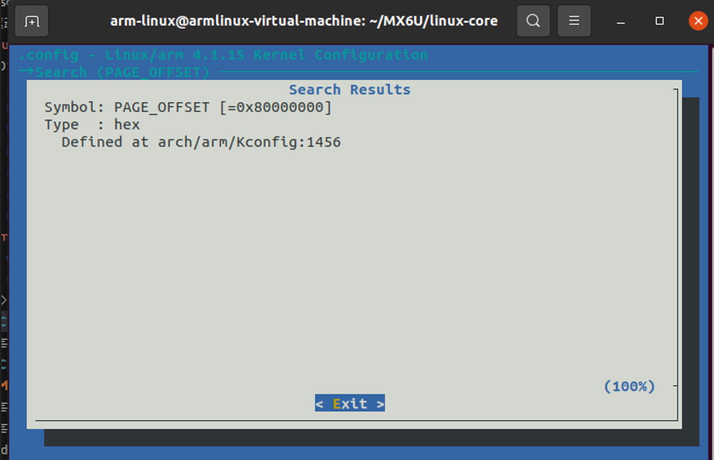

基于I.mx6ull项目的内存管理分析
基于I.mx6ull项目的内存管理分析
内存管理的原因
一般Cortex-A芯片自带的RAM很小，I.MX6U只有128KB的OCRAM。如果要运行Linux的话完全不够用的，所以必须要外接一片RAM芯片，i.MX6ULL作为一款 Cortex-A7 核心的处理器，配套的DDR3内存大小在512MB。这与服务器动辄几十GB的内存相比非常有限，因此绝对不能有内存浪费。
RAM/ROM
ROM
只读存储器，速度慢，但是容量大、掉电以后数据不会丢失、适合存储数据。
RAM
随机存储器，可以随时进行读写操作，速度很快，掉电以后数据会丢失。比如内存条、SRAM、SDRAM、DDR等都是RAM。RAM一般用来保存程序数据、中间结果
SRAM
SRAM 的全称叫做Static Random-Access Memory，也就是静态随机存储器，Memory，也就是静态随机存储器，这里的“静态”说的就是只要SRAM上电，那么SRAM里面的数据就会一直保存着，直到SRAM掉电。价格高、容量小
SDRAM
SDRAM全称是Synchronous Dynamic Random Access Memory，翻译过来就是同步动态随机存储器，
“同步”的意思是SDRAM 工作需要时钟线，
“动态”的意思是SDRAM 中的数据需要不断的刷新来保证数据不会丢失，
“随机”的意思就是可以读写任意地址的数据。
DDR
DDR全称是Double Data Rate SDRAM，也就是双倍速率SDRAM，看名字就知道DDR的速率(数据传输速率)比SDRAM高1倍！
SDRAM 在一个CLK 周期传输一次数据，DDR 在一个CLK 周期传输两次数据，也就是在上升沿和下降沿各传输一次数据，这个概念叫做预取(prefetch)，相当于DDR 的预取为2bit，因此DDR 的速度直接加倍！
DDR速度的时候一般都使用MT/s，也就是每秒多少兆次数据传输。
DDR3在DDR2 的基础上将预取(prefetch)提高到8bit，，因此在总线时钟同样为266400MHz 的情况下，DDR3 的传输速率就是10661600MT/S。
MMU
i.MX6ULL带有MMU（内存管理单元），这使我们能够运行完整的Linux系统。所有用户空间和内核空间的内存访问都是虚拟地址，通过MMU映射到物理地址。这带来了进程隔离、内存保护等好处，但也引入了TLB效率等需要考虑的问题。
系统层面内存的管理
内核空间与用户空间的划分
Linux默认将虚拟地址空间按1:3或2:2等比例划分给内核和用户。在我的项目中，我通过内核启动参数 mem= 来调整可用物理内存大小，并通过内核配置调整内核空间自身的占用（例如减少不必要的驱动和模块）。
我的项目中虚拟地址空间的分配是2:2
PAGE_OFFSET 虚拟内存中内核空间中线性映射区的起始地址（为0x80000000），因为在系统配置中设置为了2GB/2GB的类型，可以在kernel代码文件使用make menuconfig命令进入图形界面设置，查看PAGE_OFFSET的设置

划分的原因：
在我的智能果园项目中，集成了丰富的外设，驱动需要大量的虚拟地址空间来映射这些设备的寄存器区和DMA缓冲区。默认的1GB内核空间在多种外设同时工作，尤其是使用显示时，可能会显得捉襟见肘。为了系统的长期稳定性和避免未来出现地址空间耗尽的隐患，我们决定为内核预留更充裕的2GB空间。
并且在我项目中，主要的进程是：简单的UI交互进程，包括了数据的采集的处理。远达不到2GB的虚拟地址空间的上线
内存的管理
物理内存管理：Buddy（伙伴）系统
- 解决外部碎片：Buddy系统是内核管理物理页帧（通常一页为4KB）的核心算法。它将空闲页帧分组为11个（2^0, 2^1, …, 2^ 10）块链表，每个链表包含大小为2^n的连续页块。
- 分配与合并：当申请内存时，Buddy系统会寻找最合适大小的块。如果找不到，就将一个更大的块对半分裂。释放内存时，它会检查其“伙伴”块是否空闲，如果是就合并成更大的块。这有效地减少了内存的外部碎片。
- 在我们的项目中：我们会通过
/proc/buddyinfo节点来监控系统空闲内存的碎片情况，确保系统有足够大的连续物理内存可供分配（例如为DMA设备分配大块连续内存时）。
小内存分配：Slab分配器
- 解决内部碎片：内核需要频繁分配和释放远小于一页的内核对象（如
task_struct,inode等）。如果直接使用Buddy系统，会造成大量内部碎片，效率极低。 - 工作机制：Slab分配器作为Buddy系统的客户，先向Buddy申请一整页（或多个页），然后将其划分为一个个大小固定的对象缓存池（如
task_struct池、inode池）。分配和释放对象只是在SLAB管理的链表上进行操作，极大提高了效率。 - 在我们的项目中：我们会使用
slabtop命令来实时监控各个SLAB缓存的使用情况，查看是哪些内核对象占用了过多内存，这有助于判断内核的行为是否正常。
- 解决内部碎片：内核需要频繁分配和释放远小于一页的内核对象（如
内核层面内存管理
在我的驱动代码中，大量使用了Linux内核的devm（设备托管资源）管理框架来分配和管理内核内存。这不仅仅是一种内存分配，更是一种重要的资源管理策略。
原因：在传统的驱动开发中，尤其是在驱动的probe函数里，我们会手动调用kmalloc、kzalloc、ioremap、request_irq等函数来申请各种资源（内存、IO映射、中断等）。如果probe函数后续执行失败或者设备被卸载时，必须极其小心地在每一个错误路径上如goto手动释放之前申请的所有资源，否则就会导致资源泄漏。这种代码非常繁琐且容易出错。
实现的方法：“devm_系列函数（如 devm_kzalloc, devm_ioremap, devm_request_irq）完美地解决了这个问题。它的核心思想是：将申请的资源与设备本身的生命周期进行绑定。”
devm_kzalloc
1 | void *devm_kzalloc(struct device *dev, size_t size, gfp_t gfp); |
dev: 指向关联的device结构体的指针，资源将绑定到此设备的生命周期size: 要分配的内存块大小（字节）gfp: 分配标志（如GFP_KERNEL、GFP_ATOMIC），控制分配行为
使用实例：
1 | struct my_device_data { |
devm_ioremap
1 | void __iomem *devm_ioremap(struct device *dev, resource_size_t offset, resource_size_t size); |
dev: 指向关联的device结构体的指针offset: 要映射的物理地址的起始偏移size: 要映射的区域大小
使用实例
1 | static int my_probe(struct platform_device *pdev) |
devm_request_irq
1 | int devm_request_irq(struct device *dev, unsigned int irq, irq_handler_t handler, |
dev: 指向关联的device结构体的指针irq: 要请求的中断号handler: 中断处理函数指针irqflags: 中断标志（如IRQF_TRIGGER_RISING、IRQF_SHARED）devname: 设备名称（出现在/proc/interrupts中）dev_id: 传递给中断处理程序的设备标识符
使用实例：
1 | static irqreturn_t my_interrupt(int irq, void *dev_id) |
应用程序管理
一个Linux进程在内存中的布局如下，理解这个对调试至关重要：
- 代码段（.text）：只读，存放编译后的机器指令。
- 数据段（.data & .bss）：
.data存放已初始化的全局/静态变量；.bss存放未初始化的全局/静态变量（内核在加载时初始化为0）。 - 堆（Heap）：动态内存分配区，通过
malloc()/free()管理，向高地址增长。 - 栈（Stack）：存放局部变量、函数参数、返回地址等，向低地址增长。线程有自己独立的栈。
- 内存映射段（Memory Mapping Segment）：用于映射共享库、文件等。
堆内存管理：
glibc的分配器：常用的
malloc()和free()是glibc库实现的，名为ptmalloc2。工作原理：它不是每次申请都向内核申请（系统调用
brk或mmap开销大），而是自己先向内核申请一大块内存（称为Heap或Arena），然后自己管理，将其划分为不同大小的“块”分配给应用程序。这减少了用户态和内核态的切换开销。